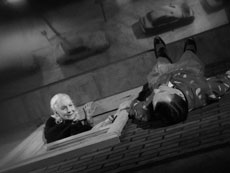

|
MY WINNIPEG
Guy Maddin | Kanada 2007 | 79 Min.
Material: 35mm
Format: 35mm
Originalsprache: Englisch
Drehbuch: Guy Maddin
Kamera: Jody Shapiro
Ton: David McCallum, David Rose
Schnitt: John Gurdebeke
Mit Ann Savage, Darcy Fehr, Louis Negin, Amy Stewart
Produktion: Everyday Pictures, Toronto, Buffalo Gal Pictures, Winnipeg
Bester Kanadischer Film, Toronto 2007
Doku-Märchen über die Kindheit Guy Maddins in Winnipeg, der kältesten Stadt der Welt. Maddin parodiert die Sinnsuche des Filmemachers, der seine Familien-geschichte verfilmen muss, um ihr zu entkommen. Er mietet das Haus seiner Kindheit, engagiert Schauspieler, die den Familienmitgliedern ähneln, und dreht die Schlüsselerlebnisse seiner Kindheit in den 60ern nach. Dokumentaraufnahmen kombiniert er mit Re-Inszenierungen, Familienfotos mit alten Filmausschnitten.
"Eine fiebrige Erzählung, in der Maddin Stadtmythen um die frühere Prärie-Boomtown dramatisch zur Parodie überspitzt, persönliche Erlebnisse ausfabuliert und zu bizarren und absurden Anekdoten überhöht. Die überpräsente Mutter, gespielt von B-Movie-Ikone Ann Savage, verleiht dem Ganzen immer einen Schuss Ödipus und eine Ahnung von Inzest." (Christiane Rösinger)
"There are no facts, but truth." (Guy Maddin)
Guy Maddin, geb. 1956 in Winnipeg. Benannt nach dem B-Movie-Star Guy Madison. Studium der Volkswirtschaft in Winnipeg. Als Autodidakt 1985 sein erster Kurzfilm, "The Dead Father". Seitdem über 30 Kurz- und Langfilme.
Filme (neuere, Auswahl): My Winnipeg 2007 | Brand Upon the Brain! 2006 | My Dad Is 100 Years Old 2005 | Sombra dolorosa 2004 | The Saddest Music in the World 2003 | Dracula: Pages from a Virgin's Diary 2002 | The Heart of the World 2000
zurück
|